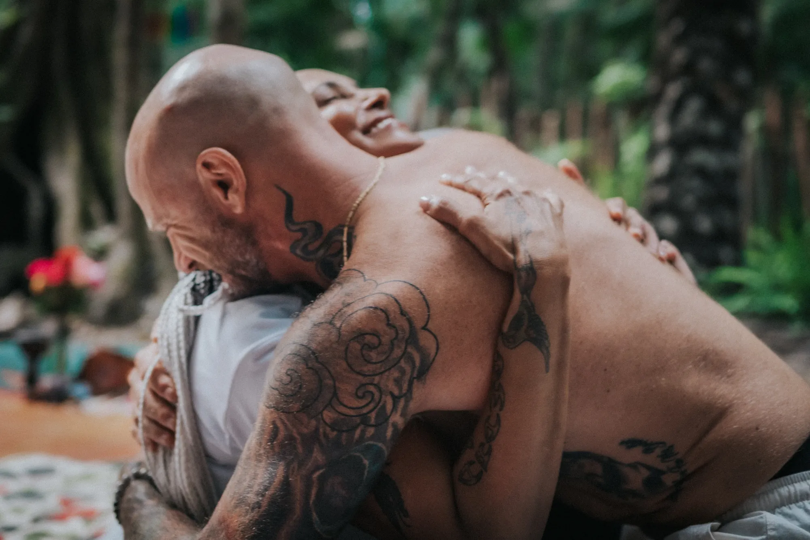
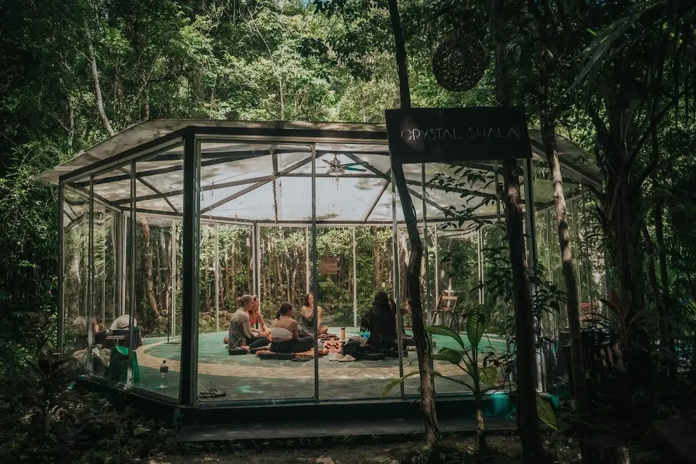

The Renewal Retreat
Six days at Lunita to slow down, set down the weight of the year, and reconnect with yourself as the new one begins.
A Fresh Beginning
The turn of the year invites a pause — a chance to rest, to honor everything you've moved through, and to gently set down what you no longer need to carry, so you meet the new year clear and reconnected with yourself.
Six days at Lunita to slow all the way down. With sacred medicine, ceremony, and rest, you'll release what the past year asked of you and remember the wholeness that was always yours — walking into the year lighter, and more at home in yourself.
Release
Some things are meant to be left in the year that's ending. Together we make space to release them — gently, with support — so you can step into the new year unburdened by the last one.
The Allies
Over six days you'll be met by a lineage of ancient allies — each opening a different door into release, clarity, and renewal.

The medicine of the gods — known for profound emotional release, spiritual awakening, and a deep connection to the divine.
Discover →
The sacred mushrooms — slower, gentler work. Emotional insight, forgiveness, and a softer view of old wounds.
Discover →
An ancient Amazonian medicine that cleanses body, mind, and spirit — deep detoxification and spiritual renewal.
Discover →
A sacred Amazonian snuff — grounding, clearing, and centering. Woven into ceremony as a tool for deep presence and prayer.
Discover →
Lunita · Puerto MorelosThe Setting
Tucked into the jungle near Puerto Morelos, Lunita is a sanctuary built for exactly this kind of work — an open-air shala, a quiet pool, hammocks strung between the palms, and a ceremony space beneath the little moon that gives the land its name.
Nourishing meals, comfortable rest, and a small, carefully held group — so all you have to do is arrive and let the six days carry you.
Sample Journey
A rhythm of ceremony, cleansing, and rest — building gently toward the deepest work and landing you softly on the other side. Each day is shaped around the group.
Settle into the sanctuary, meet your facilitators and the group, and gather for an opening circle — naming what you came to release and what you hope to carry forward.
A cleansing day — Kambo to clear the body and spirit, Rapé to steady and ground, and gentle practices to open the nervous system for the work ahead.
An evening with the sacred mushroom — a gentle door into the heart and the roots of what's ready to shift, followed by rest and quiet integration.
Morning meditation, breathwork, and time to let the medicine settle. Space to walk, swim, journal, and be with what's surfacing.
The heart of the retreat. You'll sit with Bufo (5-MeO-DMT), one to one and fully held — short in minutes, vast in scope — meeting what lies beneath everything you came to set down. The rest of the day stays quiet.
A closing circle to gather the threads, language for what happened, and something you can carry home — walking into the year rested, clear, and reconnected with yourself.
The Container
From the moment you land, every detail is cared for — so your only work is the work you came to do.
Begin
Spaces are limited and held with care. Reach out to claim yours — every journey begins with a simple health screening, so your safety and readiness are honored from the start.